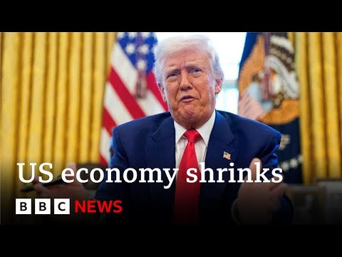

来B站一起耍【Global每日英语简报】
【美国经济萎缩，企业争相抢在特朗普关税前行动 | BBC新闻】
Summary: The US economy unexpectedly shrank by 0.3% in Q1 2024, driven by falling government spending and a surge in imports as companies rushed to avoid tariffs. Analysts discuss market reactions, tech earnings, and political divisions over the data.
摘要： 美国2024年第一季度经济意外萎缩0.3%，主因是政府支出下降及企业为规避关税而激增进口。分析师探讨了市场反应、科技公司财报及该数据引发的政治分歧。

⏱️ Estimated Reading Time: 9 min
Welcome to Business Today live from New York.
欢迎收看来自纽约的《今日商业》直播。
I'm Michelle Flurry and the Dow is down sharply at the open nearly 1% at the opening bell after new figures show the economy unexpectedly shrank.
我是米歇尔·弗勒里，最新数据显示经济意外萎缩后，道指开盘暴跌近1%。
Gross domestic product decreased at a 0.3% annualized rate in the last quarter according to the US Department of Commerce.
美国商务部数据显示，上季度国内生产总值年化下降0.3%。
That's the first contraction since 2022.
这是自2022年以来的首次萎缩。
And it marks a sharp downturn after growth at an annual pace of 2.4% 4% in the previous quarter.
此前季度年化增长率为2.4%-4%，此次数据标志着急剧下滑。
The decline was driven by a drop in government spending and a more than 40% surge in imports, which count against growth as companies race to get ahead of tariffs.
下滑主因是政府支出下降和进口激增超40%——企业为抢在关税前行动导致进口激增，这拖累了经济增长。
I'm joined by Victoria Fernandez, chief market strategist at Crossmart Global Investments.
与我连线的是Crossmart全球投资首席市场策略师维多利亚·费尔南德斯。
Good to see you.
很高兴见到您。
Are you surprised by how markets are reacting to this data?
您对市场反应感到意外吗？
I'm a little bit surprised because we knew there was a good chance that we would see a negative GDP number come out this morning.
我有些意外，因为我们早料到今早可能看到负GDP数据。
You look at some of the expectations that have been um that have been printed and it was anywhere from a negative 2 and a half negative 3% all the way up to a positive 1%.
预期值介于-2.5%至-3%到+1%之间。
So there was a wide range there and knowing that we had that huge um gain in imports which you just mentioned people you know should have anticipated we might have a negative number.
考虑到您提到的进口激增，人们本应预见负值。
So yes the market is down here to start but as you know these markets have been quite volatile so we'll see where we end up at the end of the day.
市场确实开局下跌，但近期波动剧烈，需观察收盘表现。
I mean obviously we we're focusing right now on GDP data but after the market close we're going to hear from two of the biggest names in technology reporting earnings.
当前聚焦GDP数据，但盘后将有两家科技巨头发布财报。
uh which do you think will ultimately be the bigger driver for investors?
您认为哪个会更影响投资者？
Yeah, there's a lot of data coming out this week.
本周数据密集。
Like you said, we've got u Meta and Microsoft today.
如您所言，今天有Meta和微软。
We've got more big tech names tomorrow and then we have the big jobs report on Friday.
明天还有其他科技巨头，周五还有重要就业报告。
Um along with some inflation numbers in there, too.
还包括通胀数据。
So, I think it's going to be a combination of everything probably culminating with the jobs report on Friday that really drives the market.
多重因素叠加，周五就业报告可能是市场关键驱动力。
But for these tech names, we know they've lost leadership.
但科技股已失去领头地位。
People are going to be looking to see are they going to be able to gain that leadership back and drive the market higher.
投资者将关注它们能否重获领导力并推高市场。
So they'll be looking at capex spending, you know, what is the return on their AI investment.
因此会关注资本支出和AI投资回报。
Ads will be very important for Meta.
广告对Meta至关重要。
We saw Snap had um very poor ad numbers.
Snap广告数据惨淡。
So we'll see how that works for Meta.
需观察Meta表现。
Um so there'll be a lot of information to digest and obviously we are in the middle of earning season as you say.
大量信息待消化，当前正值财报季。
You you kind of mentioned a couple there.
您提到几家公司。
How important is guidance?
业绩指引多重要？
Because a lot of companies right now are saying the tariff situation is too confusing, too uncertain, and so they're dropping that.
许多公司称关税形势混乱不明，因此取消指引。
And that leaves investors a bit more in the dark, doesn't it?
这让投资者更迷茫，对吗？
It does.
确实。
Absolutely.
毫无疑问。
And the companies that are pulling that guidance, you see the response in their stock price.
撤回指引的公司股价已现负面反应。
They've had quite a a negative reaction on the stock price when they do that.
此举导致股价显著下跌。
But look, we look at earnings numbers and we know that they're backward looking and everyone's concern is that we really had tariffs come into play starting in the second quarter.
但财报数据是滞后的，大众担忧关税二季度才真正生效。
So, it's all about what that's going to look like in the second, third, fourth quarter of this year.
关键在今年后续季度的表现。
So, guidance really is key.
因此指引至关重要。
That is what's telling people what's going to happen going forward.
它预示未来走向。
And when you're not giving any guidance because you're concerned about the macroeconomic situation, that makes investors very nervous.
若因宏观经济担忧不提供指引，会加剧投资者不安。
Victoria Fernandez, chief market strategist at Crossmark Global Investments.
Crossmark全球投资首席市场策略师维多利亚·费尔南德斯。
Always good to see you.
很高兴见到您。
My pleasure.
我的荣幸。
And just an update, the S&P 500 now down one and a half%.
最新消息：标普500现跌1.5%。
Again, that GDP headline about a contraction in the economy really driving things.
GDP萎缩的标题仍是主因。
It's also causing a stir in Washington.
华盛顿也掀起波澜。
Donald Trump has said on Truth Social that it was a Biden overhang.
特朗普在Truth Social称这是拜登的遗留问题。
He says that it is not his economy that this number, as Victoria was just saying, is backward-looking.
他表示这不是他的经济，并如维多利亚所言该数据是滞后的。
Meanwhile, you've got Democratic Congressman Richie Torres saying it's official.
与此同时民主党议员里奇·托雷斯称：
Donald Trump has finally liberated the American economy from growth.
特朗普终于让美国经济摆脱了增长。
He says making recessions great again.
他说要让衰退再次伟大。
Well, for more on the GDP numbers, which clearly are already dividing politicians, I'm joined by Ken Kim, senior economist at KPMG.
关于已引发政界分歧的GDP数据，毕马威高级经济学家肯·金加入讨论。
Uh, great to see you, Ken.
很高兴见到您，肯。
if you could talk us through.
请为我们解读。
You have this headline number that the economy shrank.
经济萎缩的标题数据。
That's not the whole story though.
但这并非全貌。
Can you explain why this data is messy?
为何数据复杂？
That's exactly right.
确实如此。
Um what's really interesting about the GDP report is that even though it is backward-looking, you had preemptive behavior by both consumers and businesses acting before the tariffs were actually uh were announced in early April.
GDP报告有趣之处在于，尽管滞后，但消费者和企业早在4月初关税宣布前就已采取预防行动。
So for example, the huge increase in imports that you mentioned uh with the exception of COVID uh the surge in imports was the highest since the early 1970s.
例如您提到的进口激增——除疫情期间外——是1970年代初以来最高。
So you're talking about you know more than 50 years.
即超50年新高。
And um the reason for that was businesses wanted to bring the goods in uh ahead of time before the tariffs uh hit prices.
原因是企业希望在关税推高价格前提前进货。
And uh in terms of consumer spending uh personal consumption expenditures in the GDP report was up 1.8% on an annualized basis which is fairly good uh considering all the uncertainty uh in the economy and financial markets these days and uh one of the reasons you had the good spending is that consumers brought forward their spending.
个人消费支出年化增长1.8%——在当前经济不确定性下表现良好，部分因消费者提前消费。
I mean, where does that report then leave the Federal Reserve, America's central bank?
这对美联储意味着什么？
Well, inflation is still running high in the United States, somewhere between 2 and a half to 2.8% annually.
美国通胀仍处2.5%-2.8%高位。
Uh, it still puts the Fed on the sidelines.
美联储仍将按兵不动。
Uh, we don't expect the Fed to start cutting rates until the fourth quarter of this year.
预计四季度才会降息。
And with the expect with the expectation that uh we will be hit by price shocks because of the tariffs uh inflation is likely to go higher over the coming months.
由于关税可能导致价格冲击，未来数月通胀或攀升。
Um briefly you mentioned that consumers pulled forward or businesses pulled forward uh inventory uh orders in anticipation of tariffs.
您提到消费者和企业因预期关税而提前采购。
Do you think this data shows how the economy actually responded to April's tariff announcement?
这数据是否体现经济对4月关税公告的实际反应？
No, that's exactly right.
正是如此。
So, uh there is a a clear kind of cut off or demarcation with April 2nd.
4月2日是明确分界线。
So going forward uh we think uh the inflationary shock that will hit both consumers and businesses uh will dampen uh consumer spending as well as curtail capital spending by businesses over the coming quarters of 2025 and weaken growth uh for the remainder of this year.
未来通胀冲击将抑制消费者支出和企业资本支出，拖累2025年及今年剩余时间的增长。
Ken Kim, senior economist at KPMG.
毕马威高级经济学家肯·金。